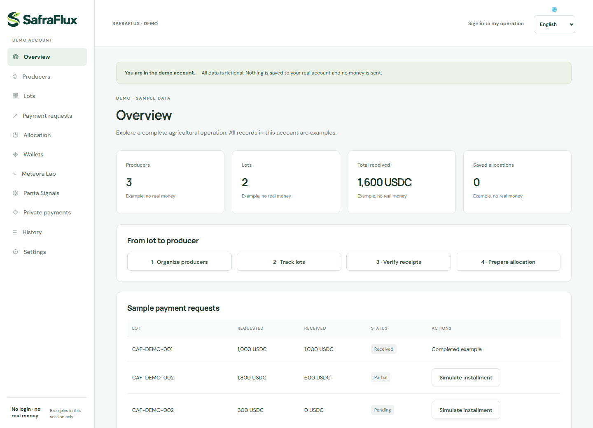

Organize the lot
Producers, delivered quantities and sale context in one workflow.
WOMEN WHO BUILD · BRAZIL
We are SheBuilds. We bring our perspectives together to turn real problems into purposeful solutions.
Beatriz, Sonia & Olivia
Building together from three parts of Brazil.
01 / OUR ESSENCE
We are Beatriz, Sonia and Olivia. SheBuilds combines product development, systems analysis and business strategy to turn concrete needs into solutions people can understand and use.
We work remotely from Pernambuco, Brasília and São Paulo. Our agricultural experience predates SafraFlux: Beatriz and Sonia built award-winning projects together and presented RaízesGo at CNPA 2024. Olivia brings experience in innovation, acceleration and business models, as well as connections in agricultural and coffee communities.
We start with coffee: one sale may bring together the work of several families. Our question is simple — how can we connect that receipt to a clear explanation of each producer’s share?
The people behind the ideas ↗02 / OUR FEATURED PROJECT
FINTECH · AGROTECHOne collective sale. A clear share for each producer.
SafraFlux helps finance teams at coffee cooperatives and small exporters connect receipts to lots, track installments and explain each producer’s share. USDC is the token used in the primary payment-request integration; Solana is the network used to verify those receipts.
Public demo with fictional data. No login or real money.

Producers, delivered quantities and sale context in one workflow.
Payment requests, installments and receipt verification for each network.
Allocation records with base amounts and quality premiums separated for each producer.
Allocation calculations do not send money. Coffee is our starting point; benefits and adoption will be evaluated through pilots.
THE PROBLEM WE CHOSE TO SOLVE
A coffee sale may involve several families, different quantities and quality premiums. Payments may arrive in installments — and the receipt alone does not explain each person’s share.
Producers, lots, payment requests, installments, history and individual statements connected in an accountability workflow.
Access to their own share after the cooperative confirms the relationship. Quantity, base amount, premium and total are visible, with review and correction requests.
An identified payment request with a reference and QR code. Our initial audience already needs a reason to use this payment method.
AN EXAMPLE TO UNDERSTAND
With deliveries of 60 kg and 40 kg, allocation by quantity produces 600 and 400 USDC. With a 10% premium and quality scores of 2 and 1, the statement becomes 615 and 385 USDC.
Fictional example of the demo rules. Quality is declared by the operation; the blockchain does not certify physical delivery. The calculation does not move funds.
Without a quality premium
Without a quality premium
Total preserved in the allocation: 1,000 USDC
FROM FEEDBACK TO PRODUCT PROGRESS
What we have delivered, the external feedback that guided a change, and the evidence we want to build in the next stage.
The feedback revealed a concrete need: a secure area where farmers can follow sale information shared by their cooperative.
We added and improved individual statements, cooperative-confirmed relationships, and reviews with correction requests.
External test reported by the team, using fictional data. Identity and company remain private. This is not a paying customer or a commercial pilot.
Producer and lot records, payment requests, installments, allocation calculations, history, backups and CSV/JSON exports. The demo can be explored without an account, wallet or funds.
The cooperative confirms the relationship before sharing. Farmers see statements sent to their accounts and can request corrections; revisions preserve the history.
Zcash has a confirmed transfer in regtest, a local environment with no monetary value. Internal tests and this evidence do not constitute an independent audit or a commercial payment.
A GUIDE TO EXPLORE
Demo receipts are simulated. The session does not change real accounts or query the blockchain to simulate payments.
TECHNOLOGY SERVING OPERATIONS
The product’s value lies in its workflow. Integrations help identify and verify payments, with explicit responsibilities.
Solana Pay requests with a reference and QR code. Server verification checks network, token, recipient, reference, amount and finalization using the signature provided by the operator.
Adapters for Base, Arbitrum, Ethereum L1 and HyperEVM with USDC; Tempo with pathUSD and Robinhood Chain with USDG. The commercial association between payment and lot is declared by the operator.
Cloak integrates private USDC flows on Solana. Zcash uses native ZEC and has local regtest evidence. Financial validation of Cloak on mainnet and external wallets remains pending.
Cloudflare Workers supports the application, API and payment verification. Cloudflare D1 stores account-isolated records, revision history and recovery. Google/GitHub and an authenticator provide access.
Beatriz leads and develops the product. OpenAI Codex supported implementation, debugging, tests and documentation; third-party libraries and SDKs are declared in the SafraFlux repository.
SafraFlux does not store wallet private keys or provide bridges, currency conversion or Pix execution. Verifying a transfer does not prove the coffee’s physical quality or the declared commercial association.
EXPERIMENTS AND INFRASTRUCTURE
Local lab using the official SDK to configure curves, fees and instructions. No token launch, pool, swap or migration has been executed.
Market-query prototype. Examples are fictional; API-key validation remains pending.
RPC Fast Start serves server queries on Solana mainnet. Solami is a separate public, read-only diagnostic; it is not the dashboard provider.
SafraFlux was submitted to Colosseum’s Crypto World’s Fair and complementary tracks. Submission does not mean an award or confirmed eligibility.
THE NEXT STAGE
We want to learn from the people carrying out finance operations and measure whether the product solves a recurring need.
We plan 14 interviews to understand problem frequency, existing tools and who approves adoption. These are not achieved results yet.
Validate external wallets, funded payments and Cloak on mainnet. Prepare shared organization roles and independent review.
Seek two pilots with a defined scope to compare reconciliation effort, statement comprehension, discrepancies and required support.
The hypothesis is a subscription per organization, with optional onboarding. Demand, pricing and cost to serve need validation; no paying customers or revenue are confirmed.
We seek conversations with coffee cooperatives and small exporters, technical guidance for validation and business mentorship. Contacts and communities are an entry point; they are not confirmed partnerships.
Connect with the team ↗BUSINESS AND VALIDATION
Our starting point is finance teams at coffee cooperatives and small exporters whose buyers already have a reason to use stablecoins. Feedback from one coffee-industry participant supports the relevance of producer visibility; it does not establish commercial demand or willingness to pay.
01 / BUSINESS MODEL
Initial hypothesis: BRL 900 per month, with optional BRL 1,500 onboarding. The subscription would cover lot reconciliation, allocation statements and support. Pricing, demand and cost to serve need validation. No revenue is confirmed.
02 / ALTERNATIVES
AgriDex, Request Finance, banks, agricultural management systems and spreadsheets are alternatives we want to evaluate. Our hypothesis is a workflow focused on lots, installments and explaining each producer’s base amount and premium. We do not assume other solutions lack these capabilities.
03 / DISCOVERY
We will talk to finance teams and seek scoped pilots. We want to measure reconciliation effort, statement comprehension, repeat use and willingness to pay. Interviews, pilots and partnerships remain next steps.
04 / CONTINUITY
We have not received investment and are not currently fundraising. We have no live token and do not plan to issue one to sustain the business model. The product does not custody user funds.
03 / EXPERIENCE THAT ADDS UP
Recognized projects from our members’ journeys. Experience we bring to what we build together today.
Connecting rural producers, institutional buyers and logistics. Built by Beatriz and Sonia and presented at CNPA 2024.
In Beatriz’s portfolio ↗An MVP combining gamification, recycling and environmental education.
In Beatriz’s portfolio ↗A project by Beatriz and Sonia for quilombola communities and Cerrado preservation.
In Beatriz’s portfolio ↗A cryptocurrency and blockchain education project for Robinhood users, recognized at TechTogether Miami in 2022.
In Beatriz’s portfolio ↗A project by Beatriz and Sonia using predictive AI to reduce vegetable waste in the supply chain.
In Beatriz’s portfolio ↗A project from Beatriz’s journey, offering personalized and interactive tourism experiences.
In Beatriz’s portfolio ↗RaízesGo, Frutos do Cerrado and DestinAI are part of Beatriz and Sonia’s shared journey, according to the team’s account documented in the submission. ReClapp, GreenHat and Infinitour are part of Beatriz’s work with other teams. Learn more in Beatriz’s portfolio and in Sonia’s portfolio. SafraFlux is the joint creation of Beatriz, Sonia and Olivia.
04 / THE CREATORS
Behind every solution are people who ask, experiment and build.
COFOUNDER · PRODUCT & DEVELOPMENT
She leads SafraFlux’s product and full-stack development, from frontend and backend to integrations, tests and deployment. A graduate in Systems Analysis and Development and a Marketing student, she connects technology, care for people and hackathon experience.
Explore my portfolio ↗COFOUNDER · PRODUCT ANALYSIS & PITCH
A SafraFlux co-creator with a Computer Science background and experience in systems analysis and logistics. She contributes product analysis, pitch and presentation, bringing the award-winning agricultural projects she built with Beatriz.
Explore my portfolio ↗COFOUNDER · STRATEGY & MARKET
She brings experience in innovation, startup acceleration, business models and go-to-market. She contributes SafraFlux’s strategy and presentation, along with connections in agricultural and coffee communities to guide the next discovery stage.
Explore my portfolio ↗EXPERIENCE AND COMMITMENT
SafraFlux development began on September 23, 2026. Beatriz leads product and development; Sonia contributes product analysis and pitch; Olivia contributes business strategy and go-to-market.
Beatriz holds a Systems Analysis and Development degree from UNINASSAU and studies Marketing at the same institution. Her academic background includes Nursing at UFPE, technical Building Construction training at SENAI PE and postgraduate investment studies at FAAL.
Beatriz worked in web development at CITi UFPE, managed an educational-game project at Siqueira Soluções Educacionais and handled customer retention and financial inquiries at Teleperformance. This experience complements the agricultural projects built with Sonia and Olivia’s business experience.
Beatriz currently works part-time and intends to move full-time after funding. Sonia and Olivia’s availability for the next stage is being aligned. The team works remotely from Jaboatão dos Guararapes (PE), Brasília and São Paulo; no relocation is committed.
Beatriz took responsibility for integrating the frontend, backend, payments, tests and deployment while improving her English communication. The work resulted in a published MVP. Learning continues to support conversations with users and potential accelerator programs.
MATERIALS FOR REVIEW
The public demo requires no login, wallet or funds. It uses fictional records and receipts. In the authenticated application, records are private per account; statements are shared after the cooperative confirms the farmer relationship.
The main repository is private. The team reports granting Colosseum judges access via hackathon@colosseum.com. Solami diagnostics has a separate public repository. Pitch and demo videos are in the materials below; the current public links are in English.
PNG logo, demonstration up to three minutes, pitch up to two minutes and direct repository links.
The latest internal review passed 233 automated tests and the production build. These results are not an independent audit or evidence of a funded payment. Financial validation with external wallets and Cloak on mainnet remains pending.
05 / KEEP EXPLORING
Explore the workflow with fictional data
↗02Project at Crypto World’s Fair 2026
↗03Product code access requires authorization
↗04Brand, gallery and promotional materials
↗ 05Team global pitch · in English
↗06Technical demonstration · in English
↗07Public component for Solana diagnostics
↗THE NEXT CHAPTER IS COLLECTIVE
A conversation can be the start of a collaboration.
Connect with the team and explore our journeys.